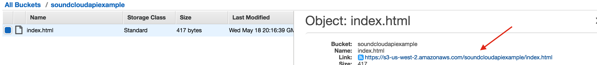
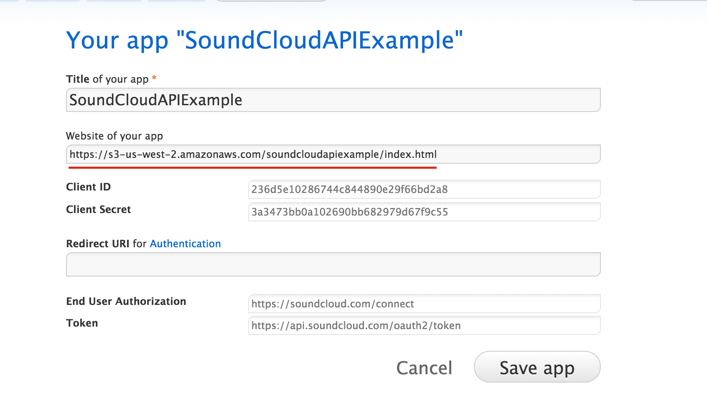

What is an API, exactly?
Before we delve into developers.soundcloud.com, let's discuss what API means.
API stands for Application Protocol Interface. To put it simply, when you're talking about an API, you're talking about a set of tools that you can use to request different services that can help you create software or web applications.
A metaphor based in real-life might be operating a car. You know that behind the dashobard are a set of tools that you can use to request different services from your car, like "turn on blinker" or "switch to a higher gear." You don't need to know the ins-and-outs of how a car works to use these tools, you just need to know how to use them.
Getting Started
Today we are going to be using SoundCloud's client-side auth flow, an authentication method from the official SoundCloud API which has multiple potential purposes. If we were doing server-side development and wanted to recognize our users, we might use SoundCloud as for our sign-in and registration process. What is especially useful about this method is that users can also sign in to SoundCloud through Facebook or Google+, which creates a seamless one-click sign-in for our app.It also allows us to act on the user's behalf regaurding their SoundCloud account (uploading sounds, for example).
Our app also gains access to things the user has set to private: when the user decides to approve our app's authorization request, our app will be able to access their profile and any private sounds that they have created or have had shared with them.
We're going to do three things in order to make this happen:
- Create a live Javascript application
- Register our application with SoundCloud
- Securely access the accounts of SoundCloud users at their wishes
To begin, you will need to create an html file. Create a folder somewhere that you can remember, like your desktop, and create a file called index.html.
If you click on the file from within your OS's file browser, it should open this simple webpage up in your browser:
Eventually we will get simple webpage this up online. But first we will get started with the SoundCloud API.
Registering our App for Authentication
We talked about how if our app is allowed to access the users' SoundCloud account, it may view things that they have marked private, as well as act on their behalf.In order for our app to gain permission from SoundCloud to do this, we must register our app. Go to http://soundcloud.com/you/apps :

You will need to either sign into or create a SoundCloud account. Now click "register application." You will be taken to this page:
Choose a name, check the Developer Policies box, and hit "Register" We'll call ours "SoundCloudAPIExample."
Now we'll hit a roadblock.
Notice the empty input boxes labeled "Website for your app" and "Redirect URI for Authorization." We will need to be able to access our index file on a server, which we will point the box "website of your app" to, and we will need to host a callback file on that same server which we set
redirect_uri to.
Upon a successful connection, this file will be used to send an authentication token back to our application, allowing the host app to access account privilages for a specific user. For security reasons, SoundCloud will only redirect users to URIs which are hosted on the same domain as the host app. Therefore, we will have to add in another file later. But we'll worry about that then.
Hosting our Website
For this demo, we're going to use Amazon Web Services to host our website. Specifically, we are going to use Amazon Simple Service storage. With Simple Service Storage, Inbound Data Transfer is free and outbound data transfer is free for 1 GB per region per month. Luckily this website will be small and not many will be using it so I don't think we will get charged.
To start, we're going to assume that you already have an Amazon Web Services account. To host a simple website with javascript and html, simply go to the AWS Management Console and click on "S3".

Then click "Create a bucket." You should be see something like this:

Choose a name and a region and click "create."
Next you will arrive at a page like this:
Hit upload and navigate to the directory that you put our index.html file in to upload it:

Now that the file is ready hit upload once more:

Next, in order to make your file accessible, you need to right-click on it and hit make public:
Finally, to retreive the url, right click and hit properties:

And now the url of your index file is visible in the right-hand side of the screen, next to "link":
That's the first URL that we need to register our app. Let's enter it now.
Creating the Redirect URI
Now it's time to create the redirect URI.
This is a live file which will be contacted by SoundCloud's API, so that it can then send an authentication token back to our application. Once received, our application will be able to use this user token via callback functions. We'll go over that last.
Navigate to the folder on your computer that the index.html file is saved in and create a new html file. In this example it will be called callback.html. In callback.html, copy or copy/paste this code:
Now save the file and upload callback.html to the same bucket as you uploaded index.html too, and don't forget to also make this file public.
Just like you did with index.html, right click and hit "properties" to grab the url. It should be the same as the last url except that index.html should be replaced with callback.html.
Now paste that url into your app at soundcloud.you.apps and hit "Save app:":

Adding the Javascript
Finally, we're going to add some javascript to our index file that will use SoundCloud's HTTP API in order to prompt the user to connect their soundcloud account to our web app via a pop-up window. Add this javascript to index.html just before the closing
<script src="https://connect.soundcloud.com/sdk/sdk-3.0.0.js"></script>
<script>
SC.initialize({
client_id: 'YOUR_CLIENT_ID',
redirect_uri: 'http://example.com/callback'
});
// initiate auth popup
SC.connect().then(function() {
return SC.get('/me');
}).then(function(me) {
alert('Hello, ' + me.username);
});
</script>
On the first line we gain access to the SoundCloud API, allowing us to access all of the functions and object types in this file. 'SC' is a type of object that exists in the SoundCloud API, which we link to as a javascript source on the first line.
If the credentials are valid than SC.connect() will initialize a connection to the user by contacting the redirect uri. If the redirect uri is valid than a Promise object is returned.
The next word, then, refers to the successful return of that Promise. If the connection is made and the promise is fulfilled, a request for the user (in the form of SC.get('/me')) is made... and finally the next then refers to the fulfillment of that Promise, upon success of which it will alert, "Hello, [username]!"
If the callback.html page does not close soon after and show the "hello" alert, there was probably a problem with the call-back.
If an "invalid uri" window pops up instead of a log-in window, there was probably a problem with authentication.
YOUR_CLIENT_ID should be replaced with the string of letters and numbers next to "client id" in your app. A client id serves a similar purpose to an API key: it prevents people from abusing the system by spamming it with requests, and in this case it adds security as well.
http://example.com/callback should be replaced with the live url to your callback file.
Hopefully you have now saved them where you registered your app:

Once you've done that, hit save and then re-upoad index.html to your S3 bucket (don't forget to make it public again!).
Now, assuming all has gone well, and you turn off your pop-up blocker, when you enter your web-page you should be greeted by this:

Your web app is now all set to connect to the SoundCloud acccounts of visiting users! There are many more things you could choose to do with this API, from allowing users to upload music to their SoundCloud accounts or play their music from your web app. Now that you've gotten started, check the documentation at developers.soundcloud.com to see what else you can do!
Thank you for doing my tutorial!
-Colleen